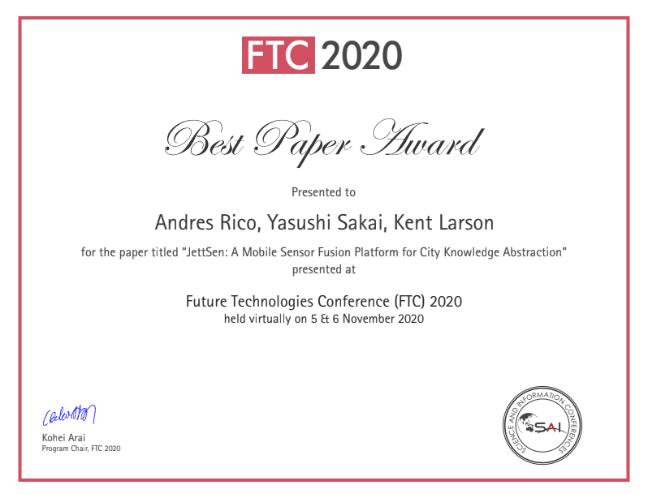

short intro
1 自己紹介
MIT Media Lab City Science Group 所属その前は建築設計とシミュレーション開発をしていた。
研究分野: 都市計画、集団的合意形成、分散システム、集合知
作品制作もする
好きなソフトウェア: git
2 lmn architecture
github と 3D CAD をブラウザ上で、デザインの継承関係を保持し、似ている度合いを計算、子提案から親提案にクレジットがキックバックされる仕組みを作成。
同時にボットを作り、遺伝的アルゴリズムで自動提案する人間とアルゴリズムが協働する CAD プラットフォーム。
アイディアコンペで優勝
↓
賞金はアプリ参加者で分配
↓
bot が優勝
↓
気まずくて wikipedia に寄付 (16 万円)
詳しくはこちら -> lmn architecture
3 Cooper Hewitt
https://youtube.com/watch?v=uk0yfYPgnAM
２つのありうる自動運転社会を想定したシミュレーションを回し、未来の姿を示すタンジブル(触れる)インターフェース。一つは、個人所有自動車による世界線で、もう一つはシェア + 軽量自走式自転車による自動運転社会。「自動運転といってもいろいろある」としたとき、どちらを選ぶか合意形成する。
詳しくはこちら -> https://www.media.mit.edu/projects/cityscope-cooper-hewitt/overview/
4 JettSen
ハッカブル自転車を利用した街づくりプラットフォーム

AI 分析のためにやるのか、街づくりのための分析かを議論する。得られたデータの内、部分・全体に分けて同じアルゴリズムで解析して、そこから想定できる施策が変わり得ることを指摘

Figure 4: こっちは道路メンテ的なデータ活用ができるが…

Figure 5: こっちは自転車講習の頻度や自動車の速度制限規制など違う施策が考えられる。（同じアルゴリズムでも）

✌️
論文 -> https://link.springer.com/chapter/10.1007/978-3-030-63089-8_51
5 多層都市「幕張市」

捉えるのが難しい文化を基軸におき、実体なき都市を作るプロジェクト。実際の土地がなかったときに、できる都市の集団的合意形成プラットフォームとは何かを考える。
-> 現状スマートシティに圧倒的に足りない視点
酒井は投票方式の実装に携わっています。 https://github.com/makuhari-city/ornot-server